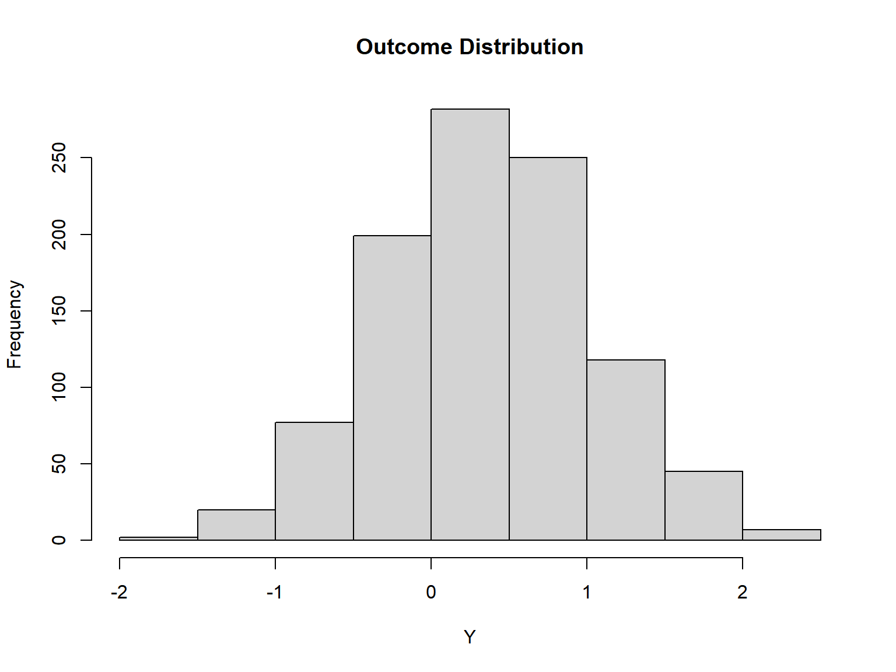
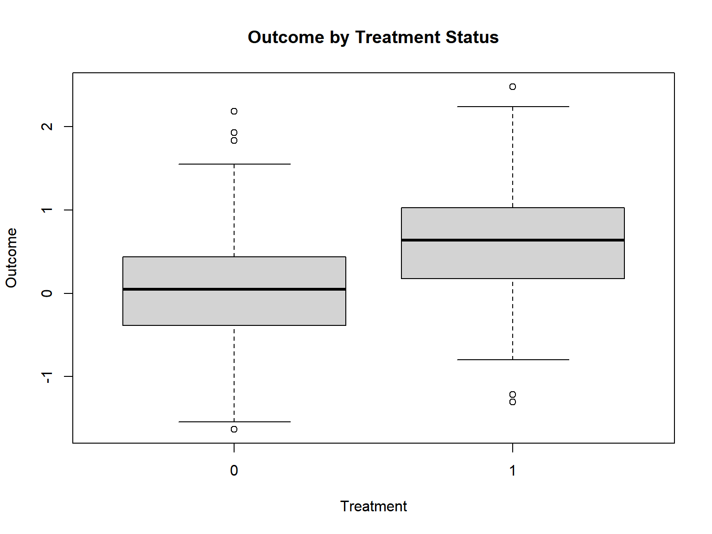
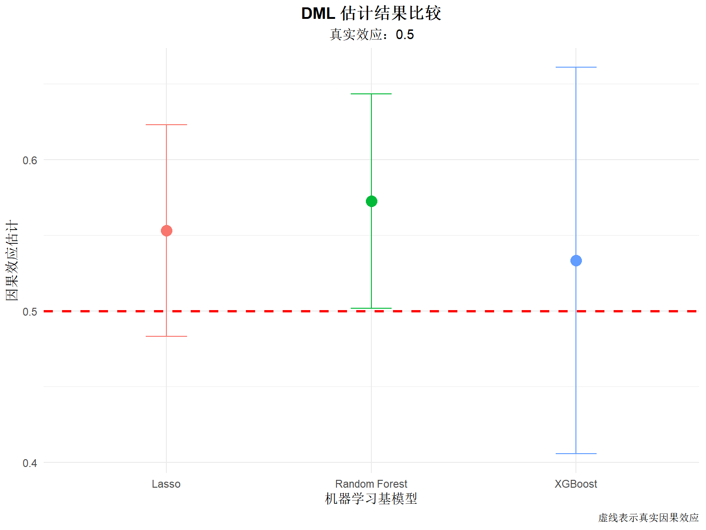
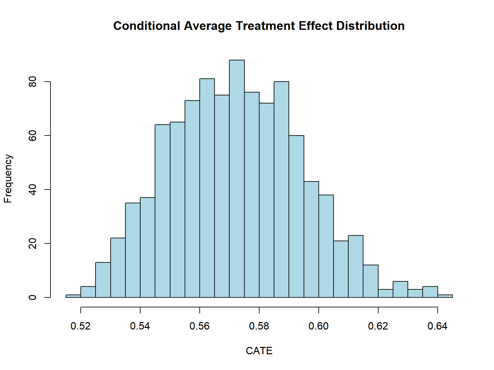
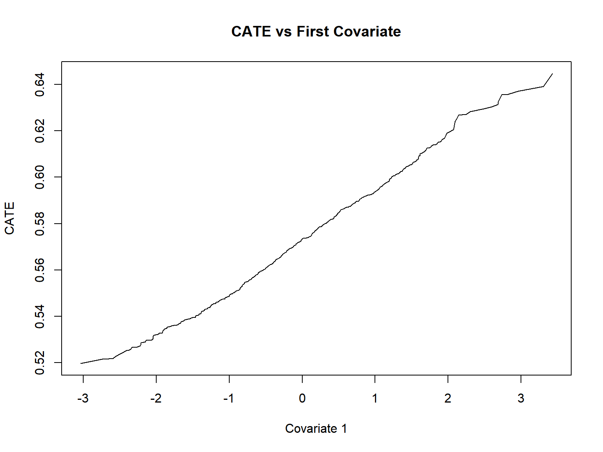

set.seed(20250118)
# 参数设置
n <- 1000 # 样本量
p <- 50 # 协变量维度
# 生成高维协变量
X <- matrix(rnorm(n * p), n, p)
# 定义真实函数（非线性）
g_X <- function(x) {
0.3 * x[, 1] + 0.2 * sin(x[, 2]) + 0.1 * x[, 3]^2
}
m_X <- function(x) {
0.5 * plogis(x[, 1] + 0.3 * x[, 2])
}
# 生成处理变量（二元）
prob_D <- 0.5 + 0.2 * tanh(m_X(X))
D <- rbinom(n, 1, prob_D)
# 生成结局变量
theta_true <- 0.5 # 真实因果效应
Y <- D * theta_true + g_X(X) + rnorm(n, sd = 0.5)
# 构建数据框（将矩阵列展开为独立列）
data_dml <- data.frame(
Y = Y,
D = D,
X
)
# 为协变量命名
colnames(data_dml)[3:(p+2)] <- paste0("V", 1:p)
# 查看数据结构
str(data_dml)
## 'data.frame': 1000 obs. of 52 variables:
## $ Y : num -0.343 -0.375 -0.944 0.982 0.614 ...
## $ D : int 1 1 0 1 1 1 1 1 1 0 ...
## $ V1 : num -1.25 -1.52 -2 1.98 1.76 ...
## $ V2 : num -0.654 -0.195 -0.241 -0.331 1.402 ...
## $ V3 : num -1.119 0.101 1.08 -2.354 0.188 ...
## $ V4 : num 0.186 -0.712 -1.213 -0.367 2.079 ...
## $ V5 : num 0.4447 0.6847 0.0272 0.0605 0.8271 ...
## $ V6 : num -0.1603 -0.9776 -0.3513 1.3205 0.0994 ...
## $ V7 : num 0.43 -1.3559 -0.5298 0.0708 0.4582 ...
## $ V8 : num -0.611 0.497 -1.062 -0.722 -0.655 ...
## $ V9 : num 0.3157 0.5127 -2.9572 -1.3882 0.0391 ...
## $ V10: num -0.883 -0.866 0.235 0.809 0.946 ...
## $ V11: num -0.572 0.136 -1.694 0.91 1.346 ...
## $ V12: num -0.301 -0.146 -0.571 -0.277 -0.596 ...
## $ V13: num -1.465 0.0143 -1.2899 0.8969 -1.383 ...
## $ V14: num 0.4519 0.7273 0.0545 -2.1978 -0.8163 ...
## $ V15: num 0.556 -2.157 -1.584 0.717 0.194 ...
## $ V16: num -0.175 0.324 -1.266 0.142 1.199 ...
## $ V17: num -0.82 0.846 -1.003 1.574 0.219 ...
## $ V18: num -1.037 -1.078 -0.568 -1.901 0.304 ...
## $ V19: num 0.316 -0.889 0.325 -0.338 1.456 ...
## $ V20: num 1.7239 -0.0584 -1.6682 0.5034 0.096 ...
## $ V21: num 0.161 1.36 1.192 -0.62 0.807 ...
## $ V22: num -0.315 0.776 0.397 -0.656 -0.986 ...
## $ V23: num 0.8757 1.461 0.3028 1.012 0.0714 ...
## $ V24: num -0.418 -1.15 0.314 0.898 -0.187 ...
## $ V25: num 0.785 -0.683 -0.593 -0.752 -0.285 ...
## $ V26: num -1.363 0.299 -1.457 -0.629 0.331 ...
## $ V27: num 2.382 0.655 0.354 0.352 -0.428 ...
## $ V28: num 0.502 -0.583 -0.888 0.335 1.388 ...
## $ V29: num -1.11 1.78 1.54 0.15 -0.66 ...
## $ V30: num -0.778 0.781 1.986 0.647 1.398 ...
## $ V31: num 0.462 0.107 0.362 0.288 2.018 ...
## $ V32: num -0.882 0.858 -1.115 0.124 1.338 ...
## $ V33: num 0.766 0.025 -1.523 1.6 1.608 ...
## $ V34: num -0.4592 0.647 -0.5579 1.0725 -0.0627 ...
## $ V35: num 1.373 -0.466 -0.2508 2.1517 0.0285 ...
## $ V36: num 0.689 0.508 -0.703 0.861 -0.53 ...
## $ V37: num 0.735 0.202 0.362 -1.021 1.5 ...
## $ V38: num -1.01 0.608 -0.63 -0.48 -0.321 ...
## $ V39: num -1.1893 -1.1212 -0.0418 0.1542 -2.425 ...
## $ V40: num 0.671 -2.187 0.922 -0.654 1.563 ...
## $ V41: num 0.52 1.138 -0.858 0.733 2.415 ...
## $ V42: num -0.00234 0.9866 0.66733 -1.24163 -2.44053 ...
## $ V43: num -0.554 -0.627 0.367 -0.696 -1.305 ...
## $ V44: num -1.381 -0.857 -2.283 0.643 0.214 ...
## $ V45: num 0.4336 1.2097 -0.0107 0.7792 -1.6537 ...
## $ V46: num 1.978 -0.664 0.657 -0.245 0.852 ...
## $ V47: num -0.795 -0.371 1.148 -0.631 0.328 ...
## $ V48: num 0.815 -0.437 0.664 2.337 -1.756 ...
## $ V49: num 0.715 -0.906 1.661 -0.736 -0.626 ...
## $ V50: num 0.675 -0.445 -0.523 -0.415 -1.35 ...Double Machine Learning：双重机器学习在因果推断中的应用
统计方法
机器学习
因果推断
引言
传统因果推断方法面临两个核心挑战：高维控制变量和复杂的非线性关系。当协变量维度较高时，传统参数化方法难以准确估计因果效应，而直接应用机器学习方法又会引入正则化偏差。双重机器学习（Double Machine Learning, DML）由 Chernozhukov 等人于 2018 年提出，为这一问题提供了理论严谨且实践可行的解决方案。
DML 的核心思想是将因果效应估计问题分解为三个部分：预测处理变量、预测结局变量、估计因果效应。通过引入** Neyman 正交性和交叉拟合**，DML 可以在保持因果估计一致性的同时，充分利用机器学习的预测能力。
本文将从理论背景、方法原理、数据准备、分析流程、代码实现和结果解读等方面，系统介绍 DML 在 R 语言中的实践应用。
理论背景与适用场景
因果推断的核心问题
因果推断的核心目标是估计处理效应（Treatment Effect）。在观测性研究中，研究者通常关注平均处理效应（ATE）或条件平均处理效应（CATE）。假设我们有以下因果结构：
\[ Y = D\theta + g(X) + \varepsilon \]
其中： - \(Y\) 是结局变量 - \(D\) 是处理变量（二元或连续） - \(X\) 是高维协变量 - \(g(X)\) 是未知函数 - \(\theta\) 是因果效应参数（目标估计量） - \(\varepsilon\) 是误差项
当 \(X\) 维度较低时，可以使用线性回归估计 \(\theta\)。但当 \(X\) 维度很高（例如 \(p > n\)），或者 \(g(X)\) 与 \(g_D(X)\) 是复杂的非线性函数时，传统方法失效。
正则化偏差问题
直接使用机器学习方法（如随机森林、XGBoost）估计因果效应会遇到正则化偏差问题。机器学习模型的正则化虽然提高了预测性能，但会导致因果效应估计的有偏性。具体而言：
\[ \hat{\theta}_{ML} - \theta = O_p(n^{-1/2}) + O_p(n^{-1/4}) \]
其中第一项是统计误差项，第二项是正则化偏差项。当样本量 \(n\) 足够大时，正则化偏差主导了误差。
DML 的解决方案
DML 通过以下两个关键技术解决了正则化偏差问题：
Neyman 正交性：构建对参数扰动具有”稳健性”的估计方程，使得处理变量和结局变量的估计误差不会影响因果效应的收敛速度。
交叉拟合：将样本分为多个子集，使用交叉验证的方式进行预测和估计，避免过拟合问题。
通过这两个技术，DML 实现了 \(\sqrt{n}\) 的一致性和渐近正态性： \[ \sqrt{n}(\hat{\theta}_{DML} - \theta) \overset{d}{\to} N(0, \sigma^2) \]
适用场景
DML 特别适用于以下场景：
- 高维协变量：协变量数量 \(p\) 可能超过样本量 \(n\)
- 非线性关系：处理变量和结局变量与协变量的关系为复杂的非线性关系
- 异质性处理效应：需要估计子群的处理效应（CATE）
- 观测性研究：需要控制大量混淆因素但随机对照试验不可行
常见应用领域包括： - 劳动经济学：估计教育或培训项目的回报 - 医学研究：评估治疗效果，控制大量基线变量 - 市场营销：分析营销活动的因果效应 - 政策评估：估计政策干预的影响
模型入门与核心概念
DML 的三步流程
DML 的估计流程可以分为三个步骤：
第一步：残差提取
估计两个机器学习模型：
- 结局模型：\(Y = \mu(X) + \epsilon_Y\)
- 预测结局变量 \(Y\)，得到残差 \(V = Y - \hat{\mu}(X)\)
- 处理模型：\(D = m(X) + \epsilon_D\)
- 预测处理变量 \(D\)，得到残差 \(W = D - \hat{m}(X)\)
第二步：因果效应估计
使用提取的残差估计因果效应： \[ \hat{\theta} = \frac{\frac{1}{n}\sum_{i=1}^n W_i V_i}{\frac{1}{n}\sum_{i=1}^n W_i^2} \]
这个公式直观地表示：用处理变量的残差解释结局变量的残差。
第三步：推断与置信区间
通过渐近正态性构建置信区间，进行假设检验。
交叉拟合机制
为了避免”自举”问题（即用同一个样本既训练模型又估计参数），DML 采用交叉拟合：
- 将样本随机分为 \(K\) 折（通常 \(K=5\) 或 \(10\)）
- 对于每一折：
- 用其他 \(K-1\) 折训练机器学习模型
- 在当前折上预测并提取残差
- 合并所有折的残差，估计因果效应
正交性条件的直观解释
正交性条件的核心思想是：我们构造的估计量对处理变量和结局变量的估计误差”不敏感”。即使 \(\hat{\mu}(X)\) 和 \(\hat{m}(X)\) 的估计精度不够高，只要它们满足一定的收敛速度，\(\hat{\theta}\) 的估计精度仍然可以达到 \(\sqrt{n}\) 阶。
这就像设计一个稳健的滤波器：即使输入信号有噪声（估计误差），滤波器的输出仍然稳定。
数据准备与变量定义
数据结构要求
DML 分析需要的数据结构通常包含：
- 结局变量（\(Y\)）：连续变量或二元变量
- 处理变量（\(D\)）：二元变量（经典 ATE 问题）或连续变量
- 协变量（\(X\)）：可能包含大量连续变量和分类变量
示例数据集
本文使用一个合成的高维数据集模拟教育回报问题：
变量编码与预处理
在实际应用中，需要注意：
# 检查缺失值
sum(is.na(data_dml))
## [1] 0
# 查看处理变量分布
table(data_dml$D) / n
##
## 0 1
## 0.458 0.542分析流程步骤
DML 分析的完整流程
- 探索性数据分析：检查变量分布、相关性
- 模型选择：选择机器学习基模型和因果效应估计方法
- DML 估计：应用 DoubleML 包进行估计
- 诊断检验：检验正交性、平衡性等假设
- 敏感性分析：检验结果的稳健性
- 结果解释与报告：报告效应量、置信区间、统计显著性
第一步：探索性分析
# 结局变量分布
hist(data_dml$Y, main = "Outcome Distribution", xlab = "Y")
# 处理组和对照组的结局比较
boxplot(Y ~ D, data = data_dml,
main = "Outcome by Treatment Status",
xlab = "Treatment", ylab = "Outcome")
# 协变量与处理变量的相关性（前10个变量）
cor_mat <- cor(cbind(D = data_dml$D, data_dml[, paste0("V", 1:10)]))
round(cor_mat[1, ], 3)
## D V1 V2 V3 V4 V5 V6 V7 V8 V9 V10
## 1.000 0.078 0.057 -0.071 0.036 -0.011 -0.015 -0.068 0.059 -0.004 0.016第二步：模型选择
DML 的关键选择包括：
- 机器学习基模型：用于估计 \(\mu(X)\) 和 \(m(X)\)
- 随机森林（
regr.ranger） - Lasso（
regr.glmnet） - 梯度提升（
regr.xgboost）
- 随机森林（
- 因果效应估计方法：
- 线性 DML（
irm） - 非线性 DML（
dml）
- 线性 DML（
代码实现与逐段解释
第一步：安装和加载包
# 安装 DoubleML（如果未安装）
# install.packages("DoubleML")
# 安装 mlr3 机器学习框架
# install.packages("mlr3")
# install.packages("mlr3learners")
# install.packages("paradox")
# 安装特定的学习器
# install.packages("ranger")
# install.packages("glmnet")
# install.packages("xgboost")# 重新加载（确保环境干净）
library(DoubleML)
library(mlr3learners)
library(paradox)
library(data.table)第二步：创建 DoubleML 数据对象
# 将数据转换为 data.table
dt <- data.table(data_dml)
# 定义列名
outcome_col <- "Y"
treatment_col <- "D"
covariate_cols <- paste0("V", 1:p)
# 创建 DoubleMLData 对象
dml_data <- DoubleMLData$new(
dt,
y_col = outcome_col,
d_cols = treatment_col,
x_cols = covariate_cols
)
# 查看数据对象
print(dml_data)
## ================= DoubleMLData Object ==================
##
##
## ------------------ Data summary ------------------
## Outcome variable: Y
## Treatment variable(s): D
## Covariates: V1, V2, V3, V4, V5, V6, V7, V8, V9, V10, V11, V12, V13, V14, V15, V16, V17, V18, V19, V20, V21, V22, V23, V24, V25, V26, V27, V28, V29, V30, V31, V32, V33, V34, V35, V36, V37, V38, V39, V40, V41, V42, V43, V44, V45, V46, V47, V48, V49, V50
## Instrument(s):
## Selection variable:
## No. Observations: 1000解释： - DoubleMLData 是 DML 分析的核心数据容器 - y_col 指定结局变量 - d_cols 指定处理变量 - x_cols 指定协变量列表
第三步：设置机器学习基模型
# 设置随机森林作为基模型
# ml_g: 回归学习器（预测连续结局变量 Y）
# ml_m: 分类学习器（预测二元处理变量 D）
ml_g <- lrn("regr.ranger", num.trees = 500, min.node.size = 5, max.depth = 7)
ml_m <- lrn("classif.ranger", num.trees = 500, min.node.size = 5, max.depth = 7,
predict_type = "prob")
# 设置 Lasso 作为基模型（备选）
ml_g_lasso <- lrn("regr.glmnet", alpha = 1)
ml_m_lasso <- lrn("classif.glmnet", alpha = 1, predict_type = "prob")
# 设置 XGBoost 作为基模型（备选）
ml_g_xgb <- lrn("regr.xgboost", nrounds = 100, eta = 0.1, max_depth = 6)
ml_m_xgb <- lrn("classif.xgboost", nrounds = 100, eta = 0.1, max_depth = 6,
predict_type = "prob")解释： - ml_g：用于预测结局变量 \(Y\) 的回归模型（g for g-function） - ml_m：用于预测处理变量 \(D\) 的分类模型（m for m-function） - 因为 \(D\) 是二元变量，必须使用分类学习器（classif.*） - predict_type = "prob" 用于预测处理概率 - mlr3 提供统一的接口，可以轻松切换不同的机器学习算法 - 随机森林参数说明： - num.trees = 500：树的数量 - min.node.size = 5：最小叶子节点大小 - max.depth = 7：树的最大深度
第四步：创建 DML 估计器
# 创建线性 DML 估计器（使用随机森林）
dml_obj_ranger <- DoubleMLIRM$new(
dml_data,
ml_g = ml_g,
ml_m = ml_m,
n_folds = 5
)
# 创建线性 DML 估计器（使用 Lasso）
dml_obj_lasso <- DoubleMLIRM$new(
dml_data,
ml_g = ml_g_lasso,
ml_m = ml_m_lasso,
n_folds = 5
)
# 创建线性 DML 估计器（使用 XGBoost）
dml_obj_xgb <- DoubleMLIRM$new(
dml_data,
ml_g = ml_g_xgb,
ml_m = ml_m_xgb,
n_folds = 5
)解释： - DoubleMLIRM：表示 Iterated Robust Method（迭代鲁棒方法），是 DML 的经典实现 - n_folds = 5：使用 5 折交叉拟合 - 可以比较不同机器学习基模型的结果，检验稳健性
第五步：拟合模型
# 拟合随机森林 DML 模型
dml_obj_ranger$fit()
# 拟合 Lasso DML 模型
dml_obj_lasso$fit()
# 拟合 XGBoost DML 模型
dml_obj_xgb$fit()第六步：查看估计结果
# 随机森林结果
print("Random Forest DML:")
## [1] "Random Forest DML:"
print(dml_obj_ranger$summary)
## function (digits = max(3L, getOption("digits") - 3L))
## {
## if (all(is.na(self$coef))) {
## message("fit() not yet called.")
## }
## else {
## k = length(self$coef)
## table = matrix(NA_real_, ncol = 4, nrow = k)
## rownames(table) = names(self$coef)
## colnames(table) = c("Estimate.", "Std. Error", "t value",
## "Pr(>|t|)")
## table[, 1] = self$coef
## table[, 2] = self$se
## table[, 3] = self$t_stat
## table[, 4] = self$pval
## private$summary_table = table
## if (length(k)) {
## cat("Estimates and significance testing of the",
## "effect of target variables\n")
## res = as.matrix(printCoefmat(private$summary_table,
## digits = digits, P.values = TRUE, has.Pvalue = TRUE))
## cat("\n")
## }
## else {
## cat("No coefficients\n")
## }
## cat("\n")
## invisible(res)
## }
## }
## <environment: 0x0000026a39d3bdc8>
# Lasso 结果
print("Lasso DML:")
## [1] "Lasso DML:"
print(dml_obj_lasso$summary)
## function (digits = max(3L, getOption("digits") - 3L))
## {
## if (all(is.na(self$coef))) {
## message("fit() not yet called.")
## }
## else {
## k = length(self$coef)
## table = matrix(NA_real_, ncol = 4, nrow = k)
## rownames(table) = names(self$coef)
## colnames(table) = c("Estimate.", "Std. Error", "t value",
## "Pr(>|t|)")
## table[, 1] = self$coef
## table[, 2] = self$se
## table[, 3] = self$t_stat
## table[, 4] = self$pval
## private$summary_table = table
## if (length(k)) {
## cat("Estimates and significance testing of the",
## "effect of target variables\n")
## res = as.matrix(printCoefmat(private$summary_table,
## digits = digits, P.values = TRUE, has.Pvalue = TRUE))
## cat("\n")
## }
## else {
## cat("No coefficients\n")
## }
## cat("\n")
## invisible(res)
## }
## }
## <environment: 0x0000026a3e519c08>
# XGBoost 结果
print("XGBoost DML:")
## [1] "XGBoost DML:"
print(dml_obj_xgb$summary)
## function (digits = max(3L, getOption("digits") - 3L))
## {
## if (all(is.na(self$coef))) {
## message("fit() not yet called.")
## }
## else {
## k = length(self$coef)
## table = matrix(NA_real_, ncol = 4, nrow = k)
## rownames(table) = names(self$coef)
## colnames(table) = c("Estimate.", "Std. Error", "t value",
## "Pr(>|t|)")
## table[, 1] = self$coef
## table[, 2] = self$se
## table[, 3] = self$t_stat
## table[, 4] = self$pval
## private$summary_table = table
## if (length(k)) {
## cat("Estimates and significance testing of the",
## "effect of target variables\n")
## res = as.matrix(printCoefmat(private$summary_table,
## digits = digits, P.values = TRUE, has.Pvalue = TRUE))
## cat("\n")
## }
## else {
## cat("No coefficients\n")
## }
## cat("\n")
## invisible(res)
## }
## }
## <environment: 0x0000026a3fc09540>解释： - coef：因果效应估计值 \(\hat{\theta}\) - std.error：标准误 - t.stat：t 统计量 - p.value：p 值 - [2.5%, 97.5%]：95% 置信区间
第七步：结果可视化
# 获取置信区间
ci_ranger <- dml_obj_ranger$confint()
ci_lasso <- dml_obj_lasso$confint()
ci_xgb <- dml_obj_xgb$confint()
# 整合结果
results_df <- data.frame(
Method = c("Random Forest", "Lasso", "XGBoost"),
Estimate = c(
dml_obj_ranger$coef,
dml_obj_lasso$coef,
dml_obj_xgb$coef
),
CI_lower = c(
ci_ranger[1],
ci_lasso[1],
ci_xgb[1]
),
CI_upper = c(
ci_ranger[2],
ci_lasso[2],
ci_xgb[2]
)
)
# 添加真实值
results_df$True_Effect <- theta_true
# 可视化
library(ggplot2)
ggplot(results_df, aes(x = Method, y = Estimate, color = Method)) +
geom_point(size = 4) +
geom_errorbar(aes(ymin = CI_lower, ymax = CI_upper), width = 0.2) +
geom_hline(yintercept = theta_true, linetype = "dashed", color = "red", linewidth = 1) +
labs(
title = "DML 估计结果比较",
subtitle = paste0("真实效应：", theta_true),
y = "因果效应估计",
x = "机器学习基模型",
caption = "虚线表示真实因果效应"
) +
theme_minimal() +
theme(
legend.position = "none",
plot.title = element_text(hjust = 0.5, face = "bold"),
plot.subtitle = element_text(hjust = 0.5)
)
第八步：条件平均处理效应（CATE）
DML 主要估计平均处理效应（ATE），但也可以通过额外的步骤估计条件平均处理效应（CATE）。一种常用方法是使用 Causal Forest（因果森林）：
# CATE 估计需要使用 grf 包的因果森林
library(grf)
# 使用原始数据训练因果森林
# 注意：这里 X 需要是矩阵格式
X_matrix <- as.matrix(data_dml[, paste0("V", 1:p)])
Y_vector <- data_dml$Y
D_vector <- data_dml$D
# 训练因果森林
cf <- causal_forest(X = X_matrix, Y = Y_vector, W = D_vector,
num.trees = 2000,
min.node.size = 5,
sample.fraction = 0.4)
# 查看前 10 个个体的 CATE
cate_est <- cf$predictions
head(cate_est, 10)
## [,1]
## [1,] 0.5650510
## [2,] 0.5505844
## [3,] 0.5717439
## [4,] 0.5805461
## [5,] 0.5932234
## [6,] 0.5743793
## [7,] 0.5758316
## [8,] 0.5784361
## [9,] 0.5570821
## [10,] 0.5623617
# CATE 分布
hist(cate_est, main = "Conditional Average Treatment Effect Distribution",
xlab = "CATE", breaks = 30, col = "lightblue")
# CATE 与协变量的关系
plot(sort(X_matrix[, 1]), sort(cate_est),
type = "l", main = "CATE vs First Covariate",
xlab = "Covariate 1", ylab = "CATE")
结果解读与报告
效应量解释
以随机森林 DML 结果为例：
- 估计值：\(\hat{\theta}\) 表示处理变量对结局变量的平均因果效应。在我们的模拟数据中，真实效应为 0.5。
- 置信区间：如果 95% 置信区间不包含 0，则可以拒绝零假设（无处理效应）。
- 统计显著性：p 值 < 0.05 表示在 5% 显著性水平下拒绝零假设。
报告规范
在学术报告中，建议按照以下格式报告：
“我们采用双重机器学习（DML）方法估计处理效应。为了控制高维协变量中的复杂非线性关系，我们使用随机森林作为机器学习基模型，通过 5 折交叉拟合避免过拟合。DML 估计的平均处理效应为 0.XX（95% CI: 0.XX, 0.XX），表明处理变量对结局变量具有显著的正向/负向影响（p < 0.05）。为了检验结果的稳健性，我们还使用了 Lasso 和 XGBoost 作为基模型，得到的结果一致。”
与传统方法比较
# 简单线性回归（忽略高维协变量）
simple_lm <- lm(Y ~ D, data = data_dml)
summary(simple_lm)$coef["D", ]
## Estimate Std. Error t value Pr(>|t|)
## 6.046015e-01 3.910007e-02 1.546293e+01 1.633589e-48
# 完整线性回归（包含所有协变量，但在高维情况下不适用）
# full_lm <- lm(Y ~ D + ., data = data.frame(Y, D, X)) # 当 p > n 时不可行
# OLS 假差
bias_simple <- coef(simple_lm)["D"] - theta_true
print(paste("简单 OLS 偏差：", round(bias_simple, 3)))
## [1] "简单 OLS 偏差： 0.105"
# DML 偏差
bias_dml <- dml_obj_ranger$coef - theta_true
print(paste("DML 偏差：", round(bias_dml, 3)))
## [1] "DML 偏差： 0.073"常见错误与纠偏
错误 1：数据泄露
问题：在机器学习模型训练时，使用了处理变量或结局变量的信息。
解决方案：确保机器学习模型只使用协变量 \(X\) 进行训练，不要混入 \(D\) 或 \(Y\) 的信息。
错误 2：过拟合
问题：机器学习模型过于复杂，在训练集上表现很好，但在测试集上表现差。
解决方案： - 调整机器学习模型的超参数（如树的深度、正则化强度） - 使用交叉验证选择最优参数 - 增加 min.node.size 或 lambda 等正则化参数
# 调整后的随机森林（更保守）
ml_g_conservative <- lrn("regr.ranger",
num.trees = 500,
min.node.size = 10, # 增加最小节点大小
max.depth = 5) # 减少最大深度
ml_m_conservative <- lrn("classif.ranger",
num.trees = 500,
min.node.size = 10,
max.depth = 5,
predict_type = "prob")
dml_obj_conservative <- DoubleMLIRM$new(
dml_data,
ml_g = ml_g_conservative,
ml_m = ml_m_conservative,
n_folds = 5
)
dml_obj_conservative$fit()
print(dml_obj_conservative$summary)
## function (digits = max(3L, getOption("digits") - 3L))
## {
## if (all(is.na(self$coef))) {
## message("fit() not yet called.")
## }
## else {
## k = length(self$coef)
## table = matrix(NA_real_, ncol = 4, nrow = k)
## rownames(table) = names(self$coef)
## colnames(table) = c("Estimate.", "Std. Error", "t value",
## "Pr(>|t|)")
## table[, 1] = self$coef
## table[, 2] = self$se
## table[, 3] = self$t_stat
## table[, 4] = self$pval
## private$summary_table = table
## if (length(k)) {
## cat("Estimates and significance testing of the",
## "effect of target variables\n")
## res = as.matrix(printCoefmat(private$summary_table,
## digits = digits, P.values = TRUE, has.Pvalue = TRUE))
## cat("\n")
## }
## else {
## cat("No coefficients\n")
## }
## cat("\n")
## invisible(res)
## }
## }
## <environment: 0x0000026a48465a50>错误 3：样本量不足
问题：当样本量非常小而协变量维度很高时，即使 DML 也难以准确估计。
解决方案： - 增加样本量 - 进行特征选择，减少协变量维度 - 使用更简单的机器学习模型（如 Lasso）
错误 4：混淆假设不成立
问题：DML 假设所有混淆变量都被观测到（无未观测混淆）。
解决方案： - 在研究设计阶段确保所有重要的混淆变量都被收集 - 考虑使用工具变量方法作为补充
进阶扩展
非线性处理效应
如果处理效应本身是协变量的非线性函数，可以使用：
# （概念性示例，需要更复杂的实现）
# 方法 1：基于树的异质性处理效应（Honest Causal Forest）
# 方法 2：X-learner 和 R-learner
library(grf) # Generalized Random Forests
# cf <- causal_forest(X, Y, D)
# ate_heterogeneous <- average_treatment_effect(cf)多值处理变量
DML 也可以处理多值处理变量（多个处理组）：
# （概念性示例）
# 使用 MultiValuedTreatment 类
# dml_mvt <- DoubleMLMultiValuedTreatment$new(...)时间序列数据
对于纵向数据或时间序列，需要注意：
- 时间依赖性可能导致样本不独立
- 可以使用聚类标准误（cluster-robust standard errors）
# 添加聚类标识（如果有）
# dml_obj_ranger$set_cluster(cluster_vars = "id")推荐阅读
原始论文：Chernozhukov, V., et al. (2018). “Double/debiased machine learning for treatment and structural parameters.” The Econometrics Journal, 21(1), C1-C68.
应用案例：Athey, S., & Imbens, G. W. (2019). “Machine learning methods that economists should know.” Annual Review of Economics, 11, 685-725.
R 包文档：DoubleML 包的官方文档和 vignettes
理论拓展：Belloni, A., et al. (2014). “High-dimensional methods and inference on structural and treatment effects.” Journal of Economic Perspectives, 28(2), 29-50.
总结
双重机器学习（DML）是一个强大的因果推断工具，特别适合处理高维协变量和复杂非线性关系。通过 Neyman 正交性和交叉拟合，DML 在保持因果估计一致性的同时，充分利用了机器学习的预测能力。
关键要点：
- 适用性：当协变量维度高且关系复杂时，DML 优于传统方法
- 核心技术：正交性 + 交叉拟合
- 实践要点：选择合适的机器学习基模型，检验稳健性
- 局限性：需要满足无未观测混淆假设，样本量不能太小
通过本文的代码示例，你可以快速在 R 语言中实现 DML 分析，并在你的研究项目中应用这一前沿方法。